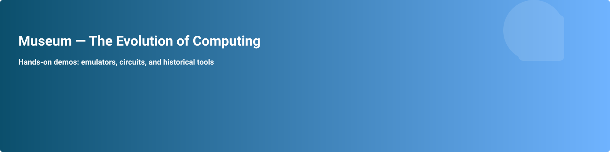

CPU Emulator
Step through instructions, watch registers change, and learn how CPUs execute programs.
Try it
Try interactive emulators, build circuits, and step through computing history.
This prototype site provides structural pages and placeholders for interactive modules. Module implementations live in the project source and will be integrated into this workspace area.